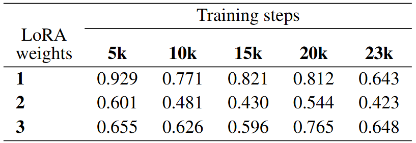
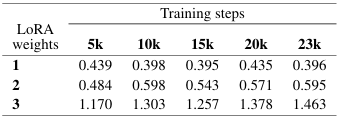

Abstract
Pansori is a traditional Korean narrative musical form that combines sung passages with spoken narration aniri under explicit rhythmic cycles jangdan. While recent text-to-music models achieve strong results on mainstream genres, their behavior on underrepresented traditions remains largely unexplored. We adapt ACE-Step to pansori via LoRA-based fine-tuning and compare its adaptation to Korean pop as a mainstream baseline. We evaluate our results through quantitative analysis with Fréchet Audio Distance (FAD) and qualitative assessment by an expert performer. Our study highlights challenges and partial successes in adapting to pansori, and suggests directions for extending text-to-music models toward cultural diversity and traditional music.

Table 1. FAD↓ scores for Pansori across LoRA weights and training steps.

Table 2. FAD↓ scores for Korean pop across LoRA weights and training steps.
FAD results suggest that the further a genre is from the model’s pretraining distribution, the harder it is to steer generation through fine-tuning. Pansori benefits from sufficient LoRA weights and training steps, whereas Korean pop tends to perform best with minimal adaptation. While Korean pop outperformed pansori in FAD scores at the lowest LoRA weight, its performance degraded significantly when the LoRA strength was increased.
We provide examples of input lyric prompts, generated audio, and original audio below.
Audio Examples
Pansori
| # | Lyric prompt | Pansori LoRA generated | OG audio |
|---|---|---|---|
| 1 |
제목가사 |
||
| 2 |
제목가사 |
||
| 3 |
제목가사 |
||
| 4 |
제목가사 |
||
| 5 |
제목가사 |